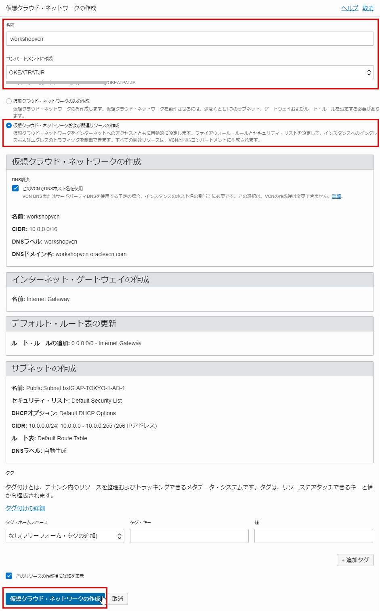
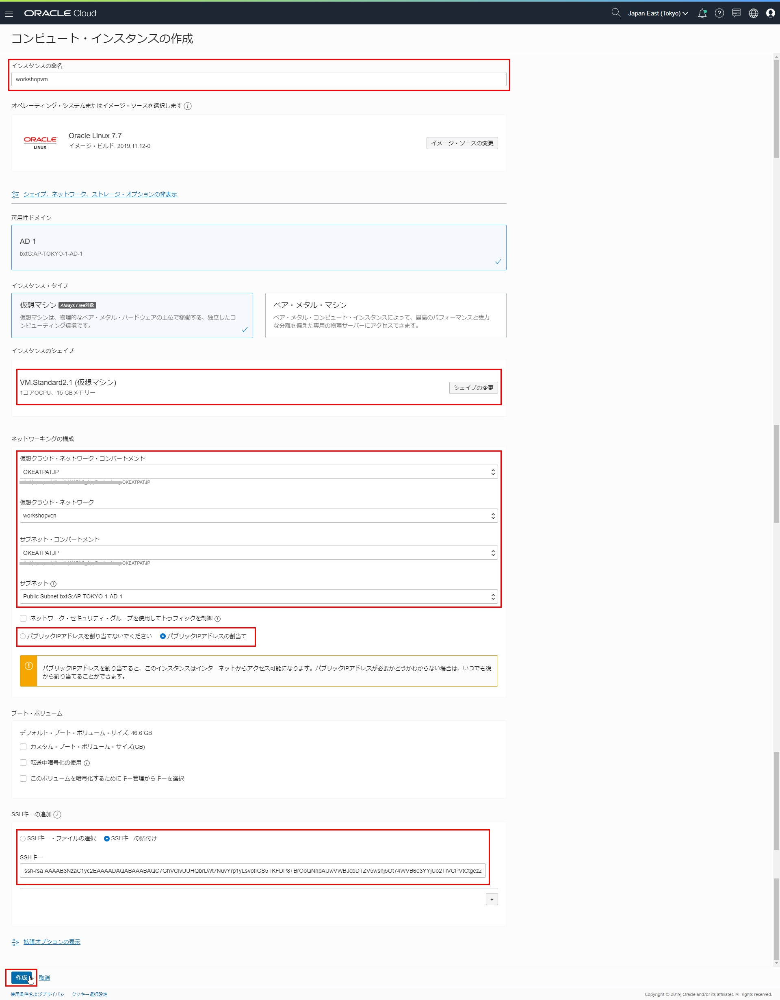
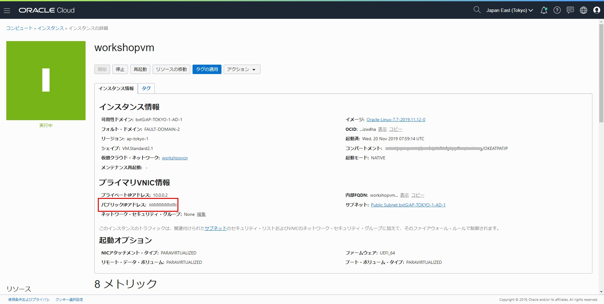
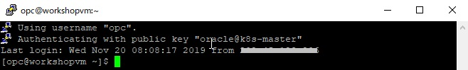

必要なソフトウェアのインストール¶
このワークショップではクライアント端末に以下のソフトウェアが必要となります。 公式サイトの手順に従い、ご利用の端末にあったソフトウェアをインストールしてください。
- kubectl : OKE（Kubernetes）クラスタの操作に使用
- git : DevCSリポジトリ（Gitリポジトリ）のクローン、ファイルの更新に使用
- terraform ： OKEクラスタとATPの作成に使用
以下の手順ではOCIのコンピュートインスタンス（Oracle Linux）を取得し、上記ソフトウェアをインストールする手順を記載します。この手順が不要な方はワークショップで利用するアカウント情報の収集に進んでください。
OCIのコンピュートインスタンスの取得¶
以下手順で実行します。
- 仮想クラウド・ネットワークを取得する
- コンピュートインスタンスを取得する
1. 仮想クラウド・ネットワークを取得する¶
OCIコンソール右上のハンバーガーメニューを展開し、「ネットワーキング」⇒「仮想クラウド・ネットワーク」に移動して、「仮想クラウド・ネットワークの作成」ボタンをクリックします。
仮想クラウド・ネットワークの作成画面で、下記項目を入力して、「仮想クラウド・ネットワークの作成」ボタンをクリックします。
- 名前：任意。例えば、workshopvcn
- コンパートメントに作成：ご利用のコンパートメントを選択する。例えば、OKEATPATJP
- 仮想クラウド・ネットワークおよび関連リソースの作成：これを選択して、関連リソース・設定（例えば、インターネットへのアクセス）が作成される

これで、仮想クラウド・ネットワークの取得は完了しました。
2. コンピュートインスタンスを取得する¶
OCIのコンピュートインスタンスを取得するのは、SSHキーペアが必要です。SSHキーペアの作成方法について、キーペアの作成をご参照ください。
OCIコンソール右上のハンバーガーメニューを展開し、「コンピュート」⇒「インスタンス」に移動して、「インスタンスの作成」ボタンをクリックします。
コンピュート・インスタンスの作成画面で、「シェイプ、ネットワーク、ストレージ・オプションの表示」をクリックし、下記項目を入力して、「作成」ボタンをクリックします。
| 入力項目 | 説明 |
|---|---|
| インスタンスの命名 | 任意（例えば、workshopvm） |
| インスタンスのシェイプ | シェイプを選択する（例えば、VM.Standard2.1） |
| 仮想クラウド・ネットワーク・コンパートメント | ご利用のコンパートメントを選択する（例えば、OKEATPATJP） |
| 仮想クラウド・ネットワーク | ご利用の仮想クラウド・ネットワークを選択する（例えば、workshopvcn） |
| サブネット・コンパートメント | ご利用のコンパートメントを選択する（例えば、OKEATPATJP） |
| サブネット | インターネットからアクセスするため、"Public Subnet"付きのサブネットを選択する |
| ネットワークセキュリティグループを使用してトラフィックを制御 | 選択しない |
| パブリックIPアドレスの割当て | インターネットからアクセスするため選択 |
| SSHキー | SSHキーペアの作成で作成したPublicキーを貼り付け、または選択 |

インスタンスの詳細画面が表示され、作成完了したら、ステータスが"実行中"になり、パブリックIPアドレスが表示されます。

sshが実行できる端末（例えば、putty）でOCIのコンピュートインスタンスにアクセスします。例えば、puttyをご利用の場合、下記項目を入力して「Open」ボタンをクリックします。
- Session ⇒ Host Name (or IP address)：コンピュートインスタンスのパブリックIPアドレス
- Connection ⇒ Data ⇒ Auto-login username：opc
- Connection ⇒ SSH ⇒ Auth ⇒ Private key file for authentication：SSH秘密キーパス

これで、OCIのコンピュートインスタンスの取得は完了しました。
ソフトウェアのインストール¶
ご利用するユーザーのホームディレクトリで、"install_software.sh"のスクリプトを作成します。
vi install_software.sh
下記スクリプト内容をコピーして、保存します。
1 2 3 4 5 6 7 8 9 10 11 12 13 14 15 16 17 18 19 20 21 22 23 24 25 26 27 28 29 30 31 32 33 34 35 36 37 38 39 40 41 42 43 44 45 46 47 | #!/bin/bash echo "Install Start" # set terraform version, by default is 0.12.16 (latest version on 2019-11-20) if [ "$1" != "" ] then TERRAFORM_VERSION="$1" else TERRAFORM_VERSION=0.12.16 fi echo "--------------------------------------------------------------------------" echo "echo TERRAFORM_VERSION" echo ${TERRAFORM_VERSION} echo "--------------------------------------------------------------------------" # install git sudo yum install -y git echo "--------------------------------------------------------------------------" echo "git --version" git --version echo "--------------------------------------------------------------------------" # install kubectl curl -LO https://storage.googleapis.com/kubernetes-release/release/$(curl -s https://storage.googleapis.com/kubernetes-release/release/stable.txt)/bin/linux/amd64/kubectl chmod +x ./kubectl sudo mv ./kubectl /usr/local/bin/kubectl source <(kubectl completion bash) echo "--------------------------------------------------------------------------" echo "kubectl version" kubectl version echo "--------------------------------------------------------------------------" # install terraform wget https://releases.hashicorp.com/terraform/${TERRAFORM_VERSION}/terraform_${TERRAFORM_VERSION}_linux_amd64.zip unzip terraform_${TERRAFORM_VERSION}_linux_amd64.zip sudo mv ./terraform /usr/local/bin/terraform echo "--------------------------------------------------------------------------" echo "terraform version" terraform version echo "--------------------------------------------------------------------------" echo "Install Complete" |
"install_software.sh"のスクリプトに実行権限を付与して、実行します。
chmod +x install_software.sh
./install_software.sh
成功した場合、git、kubectl、terraformのバージョン情報が正しく表示されます。
最新Terraformのバージョンは0.12.16以上になる場合、下記のようなメッセージが出力されるかもしれません。
Your version of Terraform is out of date! The latest version is x.yy.zz. You can update by downloading from www.terraform.io/downloads.html
その場合、最新のTerraformのバージョンをパラメータとして、"install_software.sh"に渡して再度実行してください。
./install_software.sh x.yy.zz
例えば
./install_software.sh 0.12.16
これで、ソフトウェアのインストールは完了しました。
続いてワークショップで利用するアカウント情報の収集に進んでください。